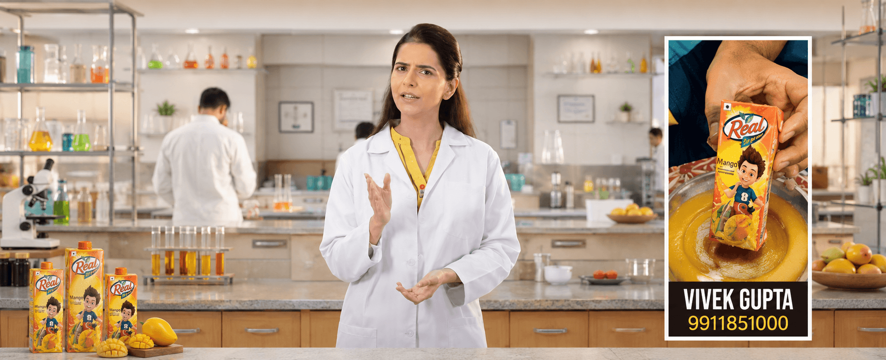

A large testing programme must be understandable within the pace and simplicity of a consumer film.
← Back to workTrust the taste.
Dabur Réal · Quality Film
Trust the taste.
Know the testing.

Project overview
Quality is a process.
The film makes it a promise.
Consumers see fruit, flavour and the final pack. Trust is built by what happens before that pack reaches them.
We turned Réal’s 108 quality tests into an accessible film story—using an expert-led laboratory world to connect technical assurance with everyday confidence.
- Format
- Quality Film
- Proof
- 108 Tests
- World
- Laboratory
- Platform
- Digital Video
The hero film
From technical proof.
To human reassurance.
An expert takes viewers behind the pack, translating the scale of testing into one clear reason to trust Réal.
The communication challenge
Explain rigour.
Without making it clinical.
The lab needs authority, while the expert and product world must remain friendly, fresh and relatable.
The narrative system
Show the science.
Land the confidence.
- 01
Ask the question
Begin with the quality concern a consumer can immediately recognise.
- 02
Reveal the process
Use the laboratory and expert voice to make the testing tangible.
- 03
Resolve in product
Bring the proof back to the familiar Réal pack and fruit experience.
The visual world
Authority in white.
Freshness in full colour.
The clean laboratory establishes control and precision. Bright fruit packs and an approachable expert keep the film visually connected to taste, freshness and family consumption.
End-to-end film craft
One proof point.
Every craft choice aligned.
Concept
Build the narrative around a strong, ownable quality fact.
Production
Create a controlled laboratory world with credible expert direction.
Product framing
Keep pack and flavour recognition clear throughout the explanation.
Post-production
Use pace, sound and clean transitions to make information easy to absorb.
The outcome
A quality claim.
Made visible and memorable.
A polished digital film that turns behind-the-scenes testing into a consumer-facing reason to choose and trust Dabur Réal.
Clear proof
108 tests becomes a simple, repeatable marker of rigour.
Human authority
An approachable expert makes technical assurance easier to believe.
Product confidence
Science resolves in the familiar pack, taste and fruit promise.
Tested with rigour.Enjoyed with confidence.
Have proof worth showing?